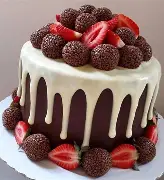

Quem somos nós?
A Pedacinho de Amor iniciou com a ideia de entregar o verdadeiro sabor caseiro, aquele que lembra a cozinha da família e o aconchego do lar.
Cada receita foi feita com carinho e dedicação, sempre buscando transformar momentos simples em experiências únicas e acolhedoras.
Estamos aqui para encantar seu paladar com doces e salgados preparados com amor, qualidade e aquele toque especial que só quem faz com coração sabe oferecer.
Como trabalhamos?
Cada doce, bolo e salgado é preparado de forma artesanal, com ingredientes selecionados e muito carinho.
Nossos produtos buscam entregar qualidade e aconchego, cada detalhe importa em nossa produção: um recheio cremoso, a textura macia de nossas tortas e o cuidado na decoração de cada sobremesa.
Produzimos em pequenas quantidades para garantir qualidade e sabor autêntico, mantendo sempre o nosso toque caseiro.
